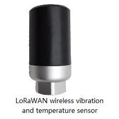

AI智能解决方案
四足机器人
作为教育和消费级产品，它在存在粉尘和潮湿的拆除、清空及石棉整治作业中仅限有限适用，应作为试点设备使用。德国专业用户要求具备符合机械和无线电设备法规的CE标识、德语说明书，并明确无线和云连接情况。
技术参数
| 结构 | 四足 |
|---|---|
| 传感器 | 4D 激光雷达 |
| 连接方式 | WLAN / 蓝牙 |
| 防护等级 | ≥ IP54 |
| 工作温度 | −10 … +40 °C |
| 海关编码（HS） | 84795000 |
欧盟标准与法规
2006/42/EG机械指令（至2027年1月19日）VO (EU) 2023/1230机械法规（自2027年1月20日起）RED 2014/53/EU无线电设备指令（WLAN、蓝牙）VO (EU) 2022/30RED授权条例：联网无线设备的网络安全EN 61000-6-2 / -6-4电磁兼容：工业环境抗扰度与发射VO (EU) 2023/1542电池法规（电池、标识、回收）
搭配产品
本类别其他产品
企业级测绘无人机 （欧盟版）配备RTK定位的紧凑型企业级无人机，适用于现状测量、屋顶与立面巡检以及施工进度记录。
带PSA识别 （安全帽/反光背心）的4G AI工地摄像机防风雨固定或球机摄像机，配备4G和AI分析，用于工地的安全帽、反光背心及人员识别。
SLAM手持式3D激光扫描仪 （用于现状测量）移动式3D激光扫描仪，边走边将空间采集为彩色点云，用于测量、现状记录和拆除规划。
带倾斜测量的GNSS RTK接收机 （测量流动站）具备IMU倾斜补偿的厘米级卫星接收机，用于放样、地形测量和施工进度检查。
工业级IP67四足机器人 （巡检机器人）防护等级IP67的坚固四足机器人，可在无人员进入风险区域的情况下巡检危险区域、楼梯和不平整地形。
碳纤维GNSS RTK对中杆 2米 两节 5/8英寸螺纹 带圆水准器与收纳袋用于RTK接收机和GNSS天线的轻量碳纤维测杆，2米、2节、直径32毫米；可选配手簿支架组成套装。
无人机、SLAM与RTK测量用像控点标靶套装，10件，防风雨十块带编号、可折叠的像控点标靶（约60厘米），用于把无人机、SLAM和RTK数据连接到控制点。
测绘无人机低噪替换螺旋桨无人机最常见的易损件。
GPU台式电脑 （32 GB内存, 1 TB固态硬盘）面向本地模型、渲染与CAD的入门级AI工作站。
带NPU的AI迷你电脑，DDR5带NPU的紧凑型迷你主机,用于办公室本地AI。
工业边缘AI盒 （8核ARM处理器, 带NPU）用于现场摄像头AI的无风扇边缘计算机。
智能相机 1.3MP,211fps,全局快门,x86 (视觉检测)带内置计算单元的工业智能相机,用于产线检测。
AI语音翻译机 双屏5英寸,35+语种,4G/WiFi用于前台或柜台实时翻译的桌面设备。
AI录音笔 转写与摘要,112语种通过App转写并总结会议的便携录音笔。
LED摄影灯箱 60x60cm,可折叠带LED灯的折叠摄影棚,用于网店产品图。

LoRaWAN无线振动传感器 (状态监测/预测性维护)用无线方式上传电机和泵振动数据的电池供电传感器。